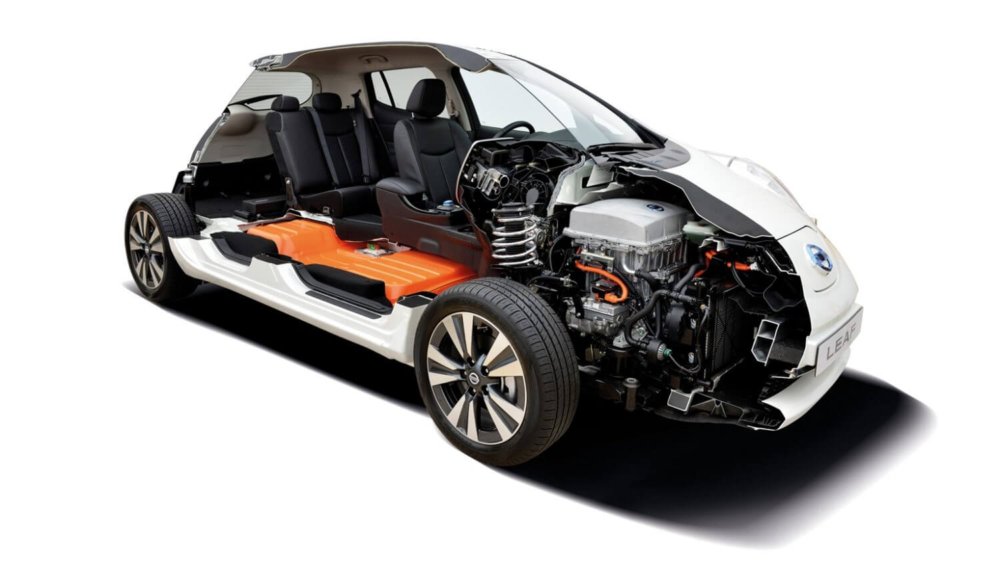
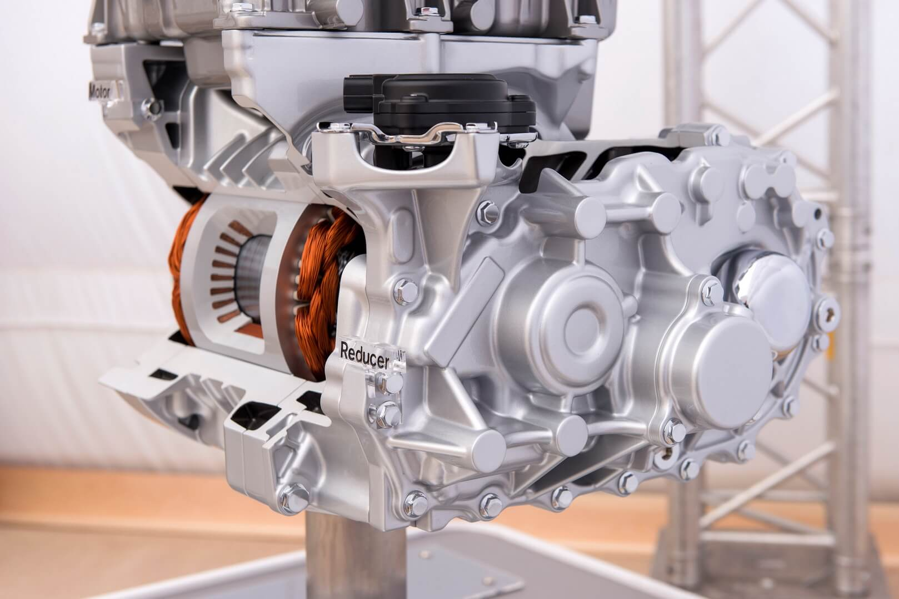
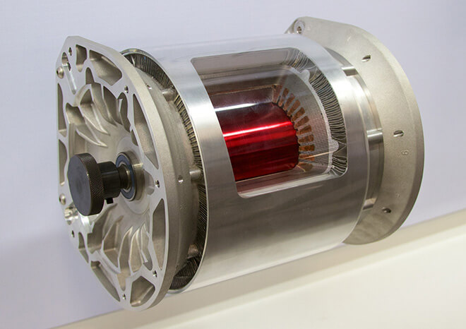
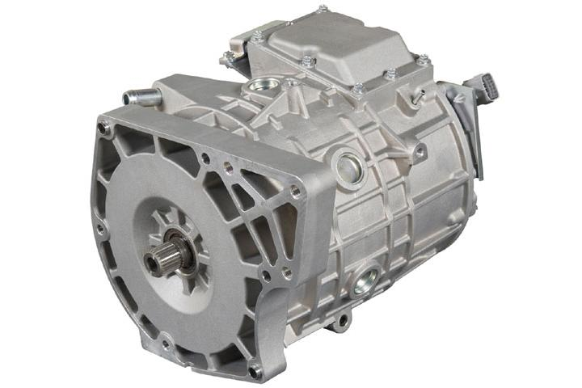
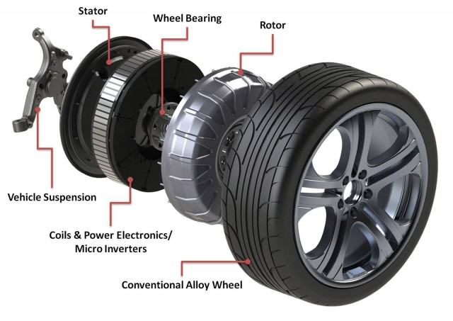

Электродвигатели для электромобилей , особенности эксплуатации и принцип работы.
Экологичные автомобили, будь-то «чистые» электромобили или плагин-гибриды объединяет наличие электродвигателя, в качестве основной движущей силы. Работа современного электрического двигателя основана на принципе электромагнитной индукции, в базе которого лежит выработка электродвижущей силы в замкнутом контуре с изменением магнитного потока. Технология не нова, однако современные достижения науки и техники позволили развить ее до невероятных высот. Немалую роль в этом сыграла и возросшая в десятки раз мощность и емкость аккумуляторных батарей, которые выполняют роль топливного бака в современных электрических и гибридных автомобилях.

Электромобиль Nissan Leaf в «разрезе»: батарея с электродвигателем
Тем не менее, нельзя со 100% уверенностью утверждать, что все электродвигатели одинаковы. Многие ошибочно считают электродвигатель довольно простой установкой, однако стоит, к примеру, учитывать тот факт, что в отличии от ДВС, у электрического двигателя практически 90% КПД выделяемой энергии идет на создание крутящего момента. Согласитесь, что подобную мощность необходимо обуздать и уметь с ней обращаться, а для этого нужно знать некоторые нюансы о работе и разновидностях электрических двигателей.
Электродвигатели – особенности эксплуатации и принцип работыК главным особенностям электрического двигателя относится несколько важных характеристик:
- Крутящий момент мотора достигает своего максимума сразу при включении, таким образом, электромобили не требуют наличия характерных для ДВС стартеров и сцеплений.
- Работа агрегата на обширном числе оборотов, позволяет электромобилю обходиться без коробки переключения передач. Для изменения стороны вращения двигателя (включение заднего хода) достаточно поменять полярности.

Электродвигатель Nissan Leaf
Однако все понимают, что стартовать на электромобиле со всего потенциала крутящего момента, который гораздо мощнее многих автомобилей с ДВС, никто не будет. По меньшей мере, это небезопасно, и что немаловажно это влечет неэффективный расход заряда батарей. Поэтому традиционно электродвигатели должны отвечать следующим требованиям:
- иметь безопасное и удобное для эксплуатации строение;
- обладать гарантией длительной эксплуатации;
- иметь компактные габариты.
Двигатели для электромобилей – разновидности и классификацияКак уже упоминалось, работа современного электродвигателя основана на давно известном принципе электромагнитной индукции. Традиционно агрегат состоит из недвижимого элемента – статора, и крутящегося – ротора. Статор имеет ряд обмоток на которые поступает электрический ток, что приводит к появлению магнитного поля, при котором ротор начинает свое движение. Скоростные показатели ротора определяются частотой, с которой происходит переключение тока с одной обмотки статора на другую.
В современных автомобилях с электрической тягой серийного производства наиболее часто используют три типа электрических двигателей.
Асинхронные двигатели. Моторы непостоянного тока, в которых скорость вращения ротора различается с потенциалом напряжения магнитного поля, созданным источником питания. Различают одно, двух и трехфазные агрегаты асинхронного типа.

Асинхронный трехфазный электродвигатель переменного тока Tesla Model S
Синхронные двигатели. Электромотор, работающий на переменном токе, с движением ротора полностью симметричным электромагнитному полю. Подобные электродвигатели используют при повышенных мощностях. Различают шаговые и вентильные синхронные электродвигатели. Для первых характерно точное расположение ротора с подачей питания на конкретную обмотку, а чтобы изменить положение ротора, напряжение между обмотками необходимо перенаправить. Для второго типа агрегатов характерно питание от полупроводниковых составляющих.

Синхронный электродвигатель с постоянным магнитом Mitsubishi i-MiEV
Двигатель-колесо. Тип электромотора сила напряжения и крутящий момент которого рассчитан на конкретное колесо. Данный тип электропривода часто используется в плагин-гибридных автомобилях в рабочем тандеме с двигателем внутреннего сгорания. Агрегат может устанавливаться непосредственно в колесо, однако современные электромобили все больше отходят от такого расположения мотора, поскольку это увеличивает удельный вес шасси и снижает управляемость. Более рационально стало использовать двигатель в качестве полноценного привода для вращения колеса.

Двигатель-колесо
Что касается регулировок управления электродвигателя, то за преобразование постоянного тока от аккумуляторных батарей в трехфазный переменный – отвечает инвертор.Трансмиссия – выполняющая роль сцепления и коробки передач, зачастую представлена одноступенчатым зубчатым редуктором.Остальные параметры работы электродвигателя регулируют электронная система управления, которая индивидуальна для каждой марки электрокара или гибрида.
Какие электродвигатели используются в гибридных и плагин-гибридных автомобиляхХотелось бы подчеркнуть, что представленная классификация и система работы электродвигателей далеко не финальная. Стремительное развитие отрасли эко автомобилей только входит в начальную стадию, поэтому кардинального изменения принципа работы, мощности, строения электромоторов можно ожидать уже в ближайшее время.
Гибридные автомобили имеют собственную специфику использования электромоторов. Во многом электродвигатель гибрида выполняет роль вспомогательного элемента, повышающего мощность основного двигателя внутреннего сгорания и снижающего уровень потребления топлива.
Электродвигатели используемые в гибридах можно разделить на несколько разновидностей:
- Встроенная помощь мотору. Электродвигатель который берет на себя часть усилий по созданию крутящего момента при движении.
- Встроенный генератор стартера. Электродвигатель, который только приводит автомобиль в движение.
- Старт/стоп двигатель. Электродвигательная система, которая отключает основной ДВС при остановке и мгновенно запускает его при начале движения.
- Параллельной работы. В данном типе электродвигатель питается от батарей, а ДВС от топливного бака. Обе категории двигателей создают крутящий момент для движения автомобиля.
- Последовательной работы. Заведенный двигатель внутреннего сгорания включает генератор, который или заводит электродвигатель или подзаряжает аккумуляторный блок.
- Параллельно-последовательной работы. Данный тип гибридного двигателя соединяет электромотор, генератор, ДВС и колеса редуктором.
По большей части в гибридах используется принцип параллельной работы электродвигателя и ДВС. Его применяют также в подключаемых гибридах (плагин-гибридах), в которых по мере истечения заряда аккумуляторных батарей подключается ДВС малой мощности, работа которого в направлена на восполнение заряда АКБ.
Преимущества и недостатки использования электродвигателейКак и любой двигатель, электромотор в электромобиле имеет собственные плюсы и минусы использования. Для понимания данных особенностей электромоторов приведем таблицу:
| Преимущества | Недостатки |
|---|---|
|
|
Говорить о перспективах, при активном использовании электродвигателей в автомобилях, уже не разумно. Сейчас можно говорить только о происходящих и грядущих улучшениях электромоторов.
Сам электродвигатель, это достаточно совершенное устройство, апгрейд которого происходит исключительно в зависимости от потенциала использования. Ближайшие тенденции по улучшению электродвигателя направлены в сторону уменьшения размеров и массы, с сохранением и увеличением производительности.
Гораздо больше работы проводится по улучшению источников энергии для электродвигателя, а точнее аккумуляторных батарей. Их также стараются сделать меньше и легче, увеличивая объем, отдачу энергии, но при этом снижая время на подзарядку. Работа над АКБ устанавливаемых на электромобили, сейчас наиболее приоритетная в отрасли производства электромобилей, гибридных и плагин-гибридных авто.
Автор: hevcars.com.ua
По материалам сайта : https://hevcars.com.ua/